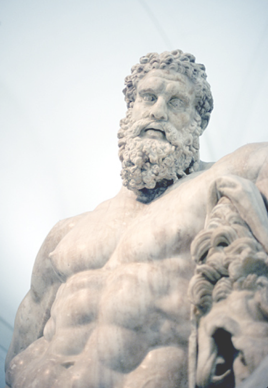

Giriş
Eski Yunanlıların Heracles, Romalılar ve onlarla birlikte dünyadaki birçok halkın Herkül dedikleri efsanevi kahraman, işin aslında Eski Yunanlıların Olimpos tanrılarıyla ilişkisi olan bir yarı tanrıydı. Hatta bazı yörelerde ve dönemlerde Herkül’e bir tanrı gibi tapılmış, onun adına dünyanın değişik köşelerinde şehirler kurulmuştur. Nitekim bizim ülkemizde de tam üç tane “Herkül Şehri” vardır. Bunlar Marmara Ereğlisi (Heracleia), Karadeniz Ereğlisi (Heracleia Pontika) ve Konya Ereğlisi (Heracleia)’dir. Bu üç kentin adındaki Ereğli kelimesi Yunanca Heracles’in ses kuralları gereği Türklerin dilinde uğradığı değişikliklerle –Heracleia, Erakle, Eregle, Ereğli- ortaya çıkmıştır. Dolayısıyla bu üç Anadolu kentinin kuruluşuyla Herkül arasında doğrudan bir ilişki vardır.
Hepsi bu değil ülkemizdeki birçok yerleşim yeri, köy, mezra ve bölgenin adında da yine Herkül’ün izleri vardır. Erekli, Araklı, Erikli... gibi bazı yer adlarının kökeninde de yine Herakles’in, yani Herkül’ün olması muhtemeldir. Ancak bunları doğrulamak ya da çürütmek ne yazık ki mümkün değil. Yine de bu olgu, Herkül ve onun maceralarının Anadolu topraklarında silinmez izler bıraktığının en sağlam izlerinden birisidir.
Çağlar boyunca Roma’dan Orta Doğu’ya kadar dünyanın büyük bir kesiminde Herkül adı güçlülük ve kuvvet ile özdeşleşmiş, Herkül’ün olağanüstü gücüyle ilgili sayısız edebi eser yaratılmıştır. Sinemanın ortaya çıkmasından sonra Herkül ile ilgili sayısız film yapılmış, bugün bu ad birçok kurum, firma, ürün ve örgütlenmenin kullandığı bir efsane haline gelmiştir. Bugün dünyanın neresine giderseniz gidin Herkül’le ilgili deyiş ve benzetmelere bütün dillerde rastlayabilirsiniz. Türkçede de “Herkül gibi.” deyimi büyük bir gücü dile getirmek için kullanılır.
Herkül adı öylesine yaygın ve öylesine saygınlık uyandırıcı bir addır ki, birçok topluluk onu kendilerine mal etmeye çalışmış ve benimsemiştir. Bir zamanlar eski Germenler, Herkül’ün kendilerini ziyaret ettiğini iddia ediyor ve onu baştanrıları Thor ile özdeşleştiriyorlardı. Etrüsk mitolojisinde ise Herkül’e “Herkle” deniyordu. Etrüsklüler Herkül’ün Zeus’un bir benzeri olan baştanrıları Tin’in oğlu olduğuna inanıyorlardı. Benzer inanış ve efsaneleri eski halkların çoğunda görmek olanaklı. Dolayısıyla bu mitolojik kahramanın yaşam öyküsü bölgeden bölgeye çok farklı biçimlerde anlatılmıştır. O kadar ki onun Yahudi kökenli Melkartla akraba olduğunu ileri sürenler bile olmuştur. Herkül’ün Argoslu, Dorlu, Giritli olduğunu söyleyenler de çıkmıştır.
Yaygın inanışa göre Herkül’ün doğum yeri Yunanistan’daki Thebai kentidir. Herkül’ün annesi seçkin bir komutan olan Amphytrion’un karısı olan Perseus’un torunlarından Mykenia kralının kızı, Alkemene idi. Babası ise Baştanrı Zeus’tu. Dolayısıyla ona ilk başlarda dedesi Alkaious’un soyundan geldiği için “Alkides” adı verilmişti.

Herkül’ün hikayesi, her dönem sanatçılara ilham kaynağı olmuştur.